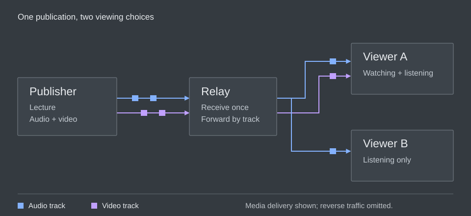

flowchart TD
accTitle: The layers of a MoQ application
accDescr: The application uses a media format, the media format uses MoQ Transport, and MoQ Transport uses QUIC directly or through WebTransport.
A[Application: rooms and viewing choices] --> M[Media format: codecs and timestamps]
M --> Q[MoQ Transport: names and delivery]
Q --> T[QUIC directly or through WebTransport]
Chapter 01
What, Why and How
On this page
Imagine you’re building an app for a live lecture. The lecturer shares a camera and microphone, students join halfway through, and some of them have bad connections. How do we get useful audio and video to everyone?
That’s the problem we’ll use to explore MoQ. We’ll start with what it does and how it compares with WebRTC, then follow the lecture from the publisher to a student’s player.
What is MoQ?
Media over QUIC (MoQ) lets applications publish live content that other applications can subscribe to. A publisher can send content directly to subscribers or distribute it through relays. MoQ Transport (MOQT) is the protocol that defines how content is named, requested, and delivered. It runs over QUIC, a secure transport with multiple independent byte streams, either directly or through WebTransport.
Where does WebRTC fit?
If you’ve built a video call with WebRTC, you’ve used a browser stack that handles encoding, sending, receiving, and decoding media. With MoQ, those pieces are assembled by a media library around MOQT, the protocol that delivers the content. This gives the library more choices about how to package and play it. We’ll get into the details below.
Separating those pieces gives an application more control over playback. In a conversation, you want quick responses. When watching a broadcast, you might prefer a little extra buffering if it keeps the video from stalling. The moq.dev article Replacing WebRTC discusses this tradeoff.
A lecture as an example
MoQ uses a publish/subscribe model: one endpoint makes content available, and another asks to receive it.
In our lecture, the lecturer publishes live audio, video, and slides. Students choose what to receive on their own devices.
In this example, the lecturer is a publisher. Each viewer is a subscriber. If the lecturer sent a separate 2 Mb/s copy to 100 students, their connection would need to upload 200 Mb/s. Every new student would add more work to the lecturer’s connection.
Instead, the lecturer sends one copy to a relay, a server that forwards it to the students. The lecturer uploads 2 Mb/s, while the relay handles the copies for all 100 viewers. As the audience grows, we can add relays and spread that work across servers. These numbers count media bytes, before network overhead.
For the browser setup in this book, a reachable relay is required when the lecturer and students are behind private networks. Both sides connect out to it, and it forwards the media between them. They can’t open WebTransport connections directly to each other, and MOQT doesn’t provide NAT traversal to make that possible. So we need the relay even for one lecturer and one student, before scaling becomes a concern. We’ll explain the connection setup below.

An endpoint can be both a publisher and a subscriber: a student can receive the lecture and publish microphone audio over the same session. A relay receives content upstream and publishes it downstream. See the draft’s role definitions.
To let the viewers make different choices, the publisher gives the pieces separate names. The lecturer’s audio can be one track, camera video another, and slides a third. A track contains individually identifiable pieces of data called objects. For example, a media format might place one compressed video frame in each object. The phone viewer requests the audio track; the laptop viewer requests audio and video.
A relay can also cache objects: keep copies so it can answer later requests. Someone joining the lecture may need content published a moment earlier to begin playback. If the relay has kept that content, it can supply it without asking the lecturer to send another copy.
Although media motivates this design, an object’s payload can also be application data. The transport handles names and delivery. The application and its media format agree on what the delivered bytes mean.
Why use MoQ?
The obvious way to send a lecture is to send every byte to every viewer. This works while everyone can keep up. But what happens when one student’s connection slows down?
Suppose the lecturer produces four megabits of media each second, but one viewer’s connection can carry only two. Each second adds more work to the queue. Waiting for every byte makes that viewer fall further behind the lecture.
We could drop some old video to catch up, but we have to choose what to drop. Compressed video often stores changes from earlier pictures. The decoder, which turns compressed data back into pictures, needs those earlier pictures to apply the changes. If we drop one at random, we might also lose the pictures that depend on it.
MoQ gives content a structure that the distribution network can use. Objects belong to groups, and a media format can arrange those groups around useful starting points. A relay can recognize the boundaries, reuse objects requested by several viewers, and choose which work to send on each viewer’s connection. It can do this without decoding the pictures. QUIC supplies separate byte streams so that unrelated content need not all wait behind the same missing bytes. See the draft’s motivation and relay model.
Now imagine a student asking the lecturer a question while a thousand others listen. The two people speaking need to hear each other quickly. The listeners might be happier with a little more buffering if it keeps the lecture smooth. We can serve the same publication to both and make different delivery choices along their paths.
Using one protocol along the path
There’s also the work of connecting the pieces. A service might receive the lecturer’s video through one protocol, repackage it for broadcast, and maintain a separate path for conversation. Each boundary needs code and has its own failure modes.
MoQ aims to use the same delivery protocol from publisher through relays to viewers. This is the draft’s convergence goal. It can reduce repackaging between those stages, though viewers still need compatible codecs and media formats. Cloudflare’s MoQ: Refactoring the Internet’s real-time media stack explains why streaming systems often combine several protocols.
How does MoQ work?
We can follow a publication through five activities:
- Connect: establish a compatible session.
- Discover: find the publication and its tracks.
- Request: choose the content to receive.
- Deliver: move objects to the subscriber.
- Present: decode and play the media.
We’ll look at each activity in turn. In a running application, some can happen at the same time. If the player already knows the track names, it can skip discovery.
Connect: establish a session
The viewer connects to a server using QUIC or, in the browser path covered here, WebTransport. The endpoints agree on a MOQT version and exchange session settings. They can then request content within that session. QUIC and WebTransport explains the transport; Publishing and Subscribing explains the session.
Discover: find the content
The application turns the viewer’s choice of lecture into names. It may already know the publication or use discovery to find it. A media description then tells the player which tracks contain audio and video and how to interpret them. Tracks, Groups and Objects introduces names, and Media and the Browser explains the media description.
Request: choose what to receive
The viewer subscribes to the tracks it wants, such as audio and low-resolution video. A late arrival may also need earlier objects before playback can begin. The receiver can request retained content while following new objects. Publishing and Subscribing follows acceptance, late joining, and cancellation.
Deliver: forward useful objects
A relay can receive content once and forward it to several viewers. Each viewer has a separate connection, so one may build a queue while another keeps up. Priorities and delivery timeouts help decide which work to send and which to abandon. Relays and Distribution explains the paths; Latency and Congestion explains what happens when they slow down.
Present: turn objects into sound and pictures
The player interprets the media format, decodes the content, and schedules playback. Receiving bytes is only part of that work: the player also needs a usable decoding starting point and timestamps. Media and the Browser follows the path from received objects to the screen and speakers.
How do the layers fit together?
These activities involve several layers of software. The application knows about the lecture and its viewers. The media format describes the audio and video. MOQT delivers named content, and the transport underneath carries the bytes.
Suppose a student opens the lecture but sees a black screen. We can follow these layers to work out why: did the player connect, did it request the right track, and did it get what it needs to decode a picture? The next chapters walk through each part.
How does MoQ compare with WebRTC?
WebRTC and MoQ can both carry a live conversation or a broadcast. They organize the work differently. WebRTC gives a browser an integrated media connection; MOQT gives applications a way to publish and request named content. The practical difference is how much of the media system your chosen stack supplies.
What the browser does for you
For a video call, the browser’s WebRTC stack handles encoding, media transport, receiving, and decoding. The application uses RTCPeerConnection, supplies signaling to exchange setup information, and decides who joins the room. Capturing a microphone and attaching received media to a player still require application code. See the WebRTC API.
With MoQ, a media library handles capture, encoding, decoding, and playback around MOQT’s object delivery. You can use a library that puts these together for you, or build the pieces your application needs. The relay can forward the objects without decoding their media. See the MOQT object model.
How content reaches people
The devices also connect differently. A home router often uses NAT, or Network Address Translation, to let several devices share a public address. A student can connect out, but someone across the Internet can’t simply connect to that student’s private address. Finding a path through this setup is called NAT traversal.
WebRTC handles this with ICE (Interactive Connectivity Establishment). The browsers exchange possible addresses through the app’s signaling and test which paths work. STUN (Session Traversal Utilities for NAT) helps discover the addresses their routers expose. If a direct path works, media can travel between the peers. Otherwise, ICE can select a path through a TURN (Traversal Using Relays around NAT) server. See the ICE introduction and WebRTC’s connectivity requirements.
Our browser MoQ setup connects both participants to a reachable relay instead. WebTransport lets a browser connect to a server, but doesn’t let another browser accept that connection as a peer. MOQT adds no NAT traversal. Both sides open outgoing connections, their routers allow return traffic on those paths, and the relay forwards media between them. That’s why this setup needs the relay even for a two-person call. See moq.dev’s conferencing setup.
For a larger WebRTC call, a selective forwarding unit, or SFU, can receive each participant’s media and forward selected streams to others. This handles distribution, while TURN provides a connection path when direct connectivity fails. WebRTC can therefore use servers for scaling too. See the SFU topology.
MoQ relays distribute requested tracks and can retain objects for later requests. For our lecture, that means a relay can forward the current audio while supplying a newly arrived viewer with earlier video needed to begin decoding. Caching is an explicit part of MOQT’s relay model; retaining enough useful content remains an implementation decision.
| Requirement | What WebRTC supplies | What to check in a MoQ system |
|---|---|---|
| A browser voice or video call | An integrated browser media stack and connectivity procedure | Capture, codecs, playback, echo handling, and connectivity in the chosen library |
| A large live audience | Media forwarding through servers such as SFUs | Relay fan-out, track selection, and actual capacity under load |
| Joining from a recent starting point | Application or media-server behavior around the live stream | Retained objects, a usable decoding point, and a way to request them |
| Connectivity across home networks | ICE tests possible paths; TURN relays traffic when needed | The implementation’s connection model; MOQT does not define an ICE replacement |
| A predictable deployment | Interoperability across the browsers and services you target | Matching MOQT revisions, media formats, browser APIs, and fallback behavior |
To compare the two, look at the whole system: the encoder, servers, player, and network. A WebRTC service can reach a large audience, and a MoQ service can support a conversation. How well either works depends on how you build and run it.
They can work together
The moq.dev project now documents WebRTC import and export gateways, using WHIP and WHEP for HTTP-based WebRTC session setup. A gateway lets a service connect existing WebRTC tools to a MoQ distribution path. Check the gateway’s supported codecs and direction of operation before choosing one.
An existing WebRTC publisher can feed a gateway that publishes the content over MoQ. The gateway has to translate media packaging and session behavior; replacing a socket is not enough. Lorenzo Miniero’s Meetecho interoperability demo shows one such bridge.
For a practical evaluation, start with one complete path: a speaker, a relay or media server, and a viewer on a constrained connection. Measure join time, conversational delay, stalls, and recovery. Then increase the audience. For more on these tradeoffs, read webrtcHacks’ comparison by use case.
The protocol and the project
You will encounter two related names as you read: the IETF MoQ work and the moq.dev project. The IETF, the Internet Engineering Task Force, develops the transport specification through public drafts. moq.dev provides applications and libraries, including a smaller protocol model called moq-lite and a media format called hang.
This book follows MOQT draft-21. The protocol is still being developed, so details can change. We point out when an example uses a moq.dev feature instead of a MOQT rule. If you’re connecting two implementations, check that they agree on the protocol version and media format. The references list the versions and sources used in this edition.
How to read this book
You only need to know what a client and server are to begin. Read the chapters in order for a complete introduction, or use the chapter guide below to find a particular explanation. The TCP/IP introduction and packet layouts have guidance for readers who want to skip or return to them.
- QUIC and WebTransport. How bytes travel, what loss holds up, and what the browser exposes.
- Tracks, Groups and Objects. How content is named, grouped, and identified.
- Publishing and Subscribing. How a viewer requests content, joins late, and leaves.
- Relays and Distribution. How content is shared across viewers and what caching adds.
- Latency and Congestion. Why queues grow and how delivery and playback recover.
- Media and the Browser. How delivered objects become synchronized sound and pictures.
- Security and Access. What connections protect and which permissions the service must enforce.
- Your First MoQ System. Demos, libraries, and guides to help you start building.
The FAQ answers broader questions, the glossary explains terms, and the references point to the specifications behind the explanations.